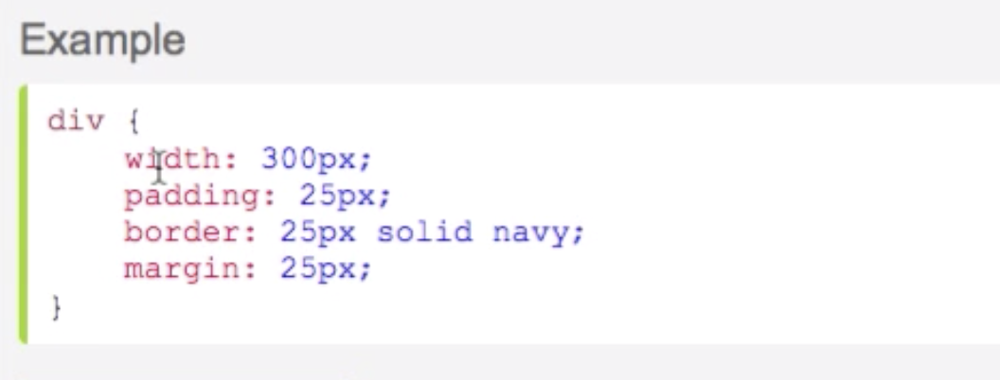

Margin, Border and Padding are CSS styling elements. CSS is a type of programming language that is responsible for the styling and appearance of a website. It is important to make use of Margin, Border and Padding well on your website in order to create breathing space for the eye. That is to say, on your website you want to be able to have a little bit of space happening to let your eye rest. Our eyes love space and open spaces. The space allows the viewers eyes and mind to rest before comfortably moving on to the next bit of content. The below diagram shows how space is used on a website through the use of Margin, Border and Padding styling.

Margin Definition
Refer to the above diagram. Margin is the space outside of the Border. It is transparent and thus clears the area outside the border in order to show distance between one section of content and the next.
Border Definition
The Border separates Padding and Margin, as Padding is space inside the border, whereas Margin is space outside the border. A Border goes around the Padding and Content.
Padding Definition
Padding deals with the inner space, the space inside the border. Padding is transparent and clears the area around the content.
The Difference
The difference between margin and padding is that while padding deals with the inner space, margin deals with the outer space to the next outer element. Padding is space inside the border, whereas Margin is space outside the border. Below are two diagrams showing the difference.


How to use it
Open up your css style sheet to be able to use this. Choose a styling element such as a div class. The < div > tag defines a division or a section in an HTML document. Div class in your style sheet will affect the div in your website. See an example below: 
Refering to the above, when there is only one number on each line, for example only 25px for padding as above, this means that the 25px pixels will be applied to the top, right, bottom and left - all around the content automatically.
Here is an example of how to style padding individually. This method can be applied to margin and border as well. For this example we will be styling the < p > tag (paragraph tags) on a website. Here you dictate the pixels for each side individually, instead of one pixel for all sides.

Below is an example of padding shorthand property. This allows you to manipulate the styling on one line with minimal amount of text. The 1st number (25px) next to the word "padding" will affect the top and bottom of the area. The second number, (50px) will affect the right and left side.

Alternatively, you can use shorthand to dictate each side by giving it measurements in a clockwise direction like so:
Padding: 25px 10px 5px 45px;
25 is top, 10 is right, 5 is bottom, 45 is left.Here is a diagram to follow when using shorthand: